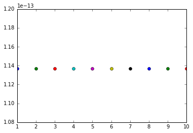

A1. 複合処理 (offline用)¶
ステージを動かし、動かしてからの時間経過ごとのずれ量を表示する
1. ステージを10um動かし、初期位置に戻す。 2. 指定したループ回数増の撮影を行う。 3. 一枚目の画像と、その後画像の比較を行い、ずれ量をグラフとして表示する
[1]:
%matplotlib inline
import PyJEM
import time
from PyJEM.offline import detector
from PyJEM.offline import TEM3
import cv2
import numpy as np
import matplotlib.pyplot as plt
import math
0 : camera
1 : STEM Image
[2]:
_detector = detector.Detector("camera")
camera is Correct!
[3]:
_detector.snapshot("jpg", save=True, filename="test")
[3]:
array([[ 77, 88, 95, ..., 0, 0, 0],
[160, 156, 83, ..., 0, 0, 0],
[157, 137, 143, ..., 0, 0, 0],
...,
[145, 138, 153, ..., 255, 255, 255],
[ 94, 82, 37, ..., 255, 255, 255],
[ 91, 141, 122, ..., 255, 255, 255]], dtype=uint8)
[6]:
num = int(input("input:"))
detectorName = input("detectorName: ")
extention = input("extention: ")
_stage = TEM3.Stage3()
_detector = detector.Detector(detectorName)
print ("Start Python Script.")
_stage.SetXRel(10000)
_stage.SetYRel(10000)
_stage.SetXRel(-10000)
_stage.SetYRel(-10000)
time.sleep(1)
st = time.clock()
for i in range(num+1):
if ( i == 0):
_detector.snapshot(extention, save=True, filename="test" + str(i))
elif( i > 0):
_detector.snapshot(extention, save=True, filename="test" + str(i))
img1 = cv2.imread(detector.resource_path + "\\test" + str(0) + "." + extention, 0)
img2 = cv2.imread(detector.resource_path + "\\test" + str(i) + "." + extention, 0)
img1 = np.float32(img1)
img2 = np.float32(img2)
print ("No." + str(i))
value,b = cv2.phaseCorrelate(img1,img2)
print ("X = " + str(value[0]) + ", Y = " + str(value[1]))
distance = math.sqrt((value[0]*value[0]) + (value[1]*value[1]))
print ("Distance = " + str(distance))
plt.plot(i, distance, "o")
fin = time.clock()
print ("= End =")
print ("Time = "+str(fin - st) + " sec")
print ("Drift = " + str(distance / (fin - st)) + " (pixels / sec)")
plt.show()
input:10
detectorName: camera
extention: jpg
camera is Correct!
Start Python Script.
No.1
X = 0.0, Y = -1.1368683772161603e-13
Distance = 1.1368683772161603e-13
No.2
X = 0.0, Y = -1.1368683772161603e-13
Distance = 1.1368683772161603e-13
No.3
X = 0.0, Y = -1.1368683772161603e-13
Distance = 1.1368683772161603e-13
No.4
X = 0.0, Y = -1.1368683772161603e-13
Distance = 1.1368683772161603e-13
No.5
X = 0.0, Y = -1.1368683772161603e-13
Distance = 1.1368683772161603e-13
No.6
X = 0.0, Y = -1.1368683772161603e-13
Distance = 1.1368683772161603e-13
No.7
X = 0.0, Y = -1.1368683772161603e-13
Distance = 1.1368683772161603e-13
No.8
X = 0.0, Y = -1.1368683772161603e-13
Distance = 1.1368683772161603e-13
No.9
X = 0.0, Y = -1.1368683772161603e-13
Distance = 1.1368683772161603e-13
No.10
X = 0.0, Y = -1.1368683772161603e-13
Distance = 1.1368683772161603e-13
= End =
Time = 1.7679926167919007 sec
Drift = 6.430277855340014e-14 (pixels / sec)

[7]:
help(plt.plot)
Help on function plot in module matplotlib.pyplot:
plot(*args, **kwargs)
Plot lines and/or markers to the
:class:`~matplotlib.axes.Axes`. *args* is a variable length
argument, allowing for multiple *x*, *y* pairs with an
optional format string. For example, each of the following is
legal::
plot(x, y) # plot x and y using default line style and color
plot(x, y, 'bo') # plot x and y using blue circle markers
plot(y) # plot y using x as index array 0..N-1
plot(y, 'r+') # ditto, but with red plusses
If *x* and/or *y* is 2-dimensional, then the corresponding columns
will be plotted.
If used with labeled data, make sure that the color spec is not
included as an element in data, as otherwise the last case
``plot("v","r", data={"v":..., "r":...)``
can be interpreted as the first case which would do ``plot(v, r)``
using the default line style and color.
If not used with labeled data (i.e., without a data argument),
an arbitrary number of *x*, *y*, *fmt* groups can be specified, as in::
a.plot(x1, y1, 'g^', x2, y2, 'g-')
Return value is a list of lines that were added.
By default, each line is assigned a different style specified by a
'style cycle'. To change this behavior, you can edit the
axes.prop_cycle rcParam.
The following format string characters are accepted to control
the line style or marker:
================ ===============================
character description
================ ===============================
``'-'`` solid line style
``'--'`` dashed line style
``'-.'`` dash-dot line style
``':'`` dotted line style
``'.'`` point marker
``','`` pixel marker
``'o'`` circle marker
``'v'`` triangle_down marker
``'^'`` triangle_up marker
``'<'`` triangle_left marker
``'>'`` triangle_right marker
``'1'`` tri_down marker
``'2'`` tri_up marker
``'3'`` tri_left marker
``'4'`` tri_right marker
``'s'`` square marker
``'p'`` pentagon marker
``'*'`` star marker
``'h'`` hexagon1 marker
``'H'`` hexagon2 marker
``'+'`` plus marker
``'x'`` x marker
``'D'`` diamond marker
``'d'`` thin_diamond marker
``'|'`` vline marker
``'_'`` hline marker
================ ===============================
The following color abbreviations are supported:
========== ========
character color
========== ========
'b' blue
'g' green
'r' red
'c' cyan
'm' magenta
'y' yellow
'k' black
'w' white
========== ========
In addition, you can specify colors in many weird and
wonderful ways, including full names (``'green'``), hex
strings (``'#008000'``), RGB or RGBA tuples (``(0,1,0,1)``) or
grayscale intensities as a string (``'0.8'``). Of these, the
string specifications can be used in place of a ``fmt`` group,
but the tuple forms can be used only as ``kwargs``.
Line styles and colors are combined in a single format string, as in
``'bo'`` for blue circles.
The *kwargs* can be used to set line properties (any property that has
a ``set_*`` method). You can use this to set a line label (for auto
legends), linewidth, anitialising, marker face color, etc. Here is an
example::
plot([1,2,3], [1,2,3], 'go-', label='line 1', linewidth=2)
plot([1,2,3], [1,4,9], 'rs', label='line 2')
axis([0, 4, 0, 10])
legend()
If you make multiple lines with one plot command, the kwargs
apply to all those lines, e.g.::
plot(x1, y1, x2, y2, antialiased=False)
Neither line will be antialiased.
You do not need to use format strings, which are just
abbreviations. All of the line properties can be controlled
by keyword arguments. For example, you can set the color,
marker, linestyle, and markercolor with::
plot(x, y, color='green', linestyle='dashed', marker='o',
markerfacecolor='blue', markersize=12).
See :class:`~matplotlib.lines.Line2D` for details.
The kwargs are :class:`~matplotlib.lines.Line2D` properties:
agg_filter: unknown
alpha: float (0.0 transparent through 1.0 opaque)
animated: [True | False]
antialiased or aa: [True | False]
axes: an :class:`~matplotlib.axes.Axes` instance
clip_box: a :class:`matplotlib.transforms.Bbox` instance
clip_on: [True | False]
clip_path: [ (:class:`~matplotlib.path.Path`, :class:`~matplotlib.transforms.Transform`) | :class:`~matplotlib.patches.Patch` | None ]
color or c: any matplotlib color
contains: a callable function
dash_capstyle: ['butt' | 'round' | 'projecting']
dash_joinstyle: ['miter' | 'round' | 'bevel']
dashes: sequence of on/off ink in points
drawstyle: ['default' | 'steps' | 'steps-pre' | 'steps-mid' | 'steps-post']
figure: a :class:`matplotlib.figure.Figure` instance
fillstyle: ['full' | 'left' | 'right' | 'bottom' | 'top' | 'none']
gid: an id string
label: string or anything printable with '%s' conversion.
linestyle or ls: ['solid' | 'dashed', 'dashdot', 'dotted' | (offset, on-off-dash-seq) | ``'-'`` | ``'--'`` | ``'-.'`` | ``':'`` | ``'None'`` | ``' '`` | ``''``]
linewidth or lw: float value in points
marker: :mod:`A valid marker style <matplotlib.markers>`
markeredgecolor or mec: any matplotlib color
markeredgewidth or mew: float value in points
markerfacecolor or mfc: any matplotlib color
markerfacecoloralt or mfcalt: any matplotlib color
markersize or ms: float
markevery: [None | int | length-2 tuple of int | slice | list/array of int | float | length-2 tuple of float]
path_effects: unknown
picker: float distance in points or callable pick function ``fn(artist, event)``
pickradius: float distance in points
rasterized: [True | False | None]
sketch_params: unknown
snap: unknown
solid_capstyle: ['butt' | 'round' | 'projecting']
solid_joinstyle: ['miter' | 'round' | 'bevel']
transform: a :class:`matplotlib.transforms.Transform` instance
url: a url string
visible: [True | False]
xdata: 1D array
ydata: 1D array
zorder: any number
kwargs *scalex* and *scaley*, if defined, are passed on to
:meth:`~matplotlib.axes.Axes.autoscale_view` to determine
whether the *x* and *y* axes are autoscaled; the default is
*True*.
Notes
-----
In addition to the above described arguments, this function can take a
**data** keyword argument. If such a **data** argument is given, the
following arguments are replaced by **data[<arg>]**:
* All arguments with the following names: 'y', 'x'.
Additional kwargs: hold = [True|False] overrides default hold state
[ ]: